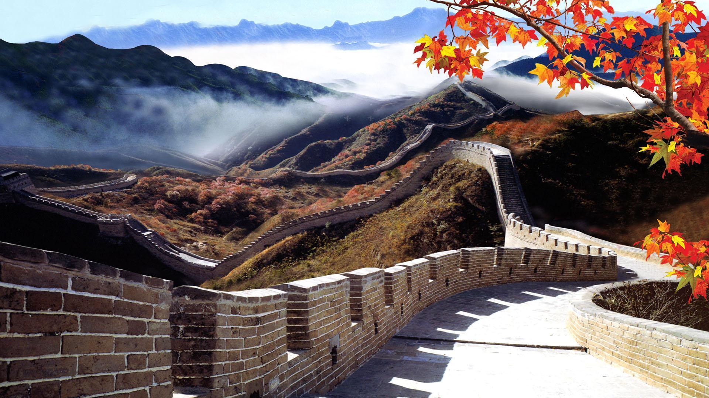

Favorite Tourist Spots
Great Wall Of China

Intro :
The Great Wall of China is a series of fortifications made of brick, tamped earth, stone, and other materials, generally built along an east-to-west line across the historical northern borders of China to protect the Chinese states and empires against the raids and invasions of the various nomadic groups of the Eurasian Steppe.
The walls were built in different time periods by different Chinese dynasties, with the earliest sections dating back to the 7th century BC.
The most well-known sections of the Great Wall were built during the Ming dynasty (1368-1644).
The Great Wall is the longest wall in the world,
stretching over 13,000 miles (21,000 km) from the east coast of China to the western frontier.